DOI: 10.1021/acsenvironau.3c00048
本地阅读版，依据出版社提交至PMC的原始JATS XML整理，供核对正文、图注、表格和原图。原始main.xml完整保留；此页不是出版社版式PDF。所有数字与正文冲突均保留原文，未修正或推算。实验准入状态见逐篇审核表。
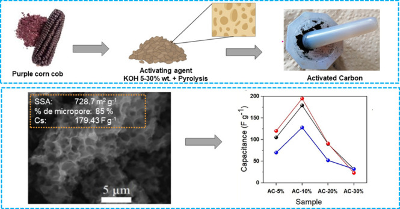
Activated carbon-based supercapacitor electrodes synthesized from biomass or waste-derived biomass have recently attracted considerable attention because of their low cost, natural abundance, and power delivery performance. In this work, purple-corncob-based active carbons are prepared by KOH activation and subsequently evaluated as a composite electrode for supercapacitors using either an acidic or an alkali solution as the electrolyte. The synthesis of the material involves mixing the purple corncob powder with different concentrations of KOH (in the range of 5% to 30%) and a thermal treatment at 700 °C under an inert atmosphere. Physicochemical characterizations were performed using scanning electron microscopy, Raman spectroscopy, N2 physisorption analysis, Fourier-transform infrared spectroscopy, and X-ray photoelectron spectroscopy, while the electrochemical characteristics were determined using cyclic voltammetry, a galvanostatic charge/discharge curve, and electrochemical impedance techniques measured in a three- and two-electrode system. Composite electrodes activated with 10% KOH had a specific surface area of 728 m2 g–1, and high capacitances of 195 F g–1 at 0.5 A g–1 in 1 mol L–1 H2SO4 and 116 F g–1 at 0.5 A g–1 in 1 mol L–1 KOH were obtained. It also presented a 76% capacitance retention after 50 000 cycles. These properties depend significantly on the microporous area and micropore volume characteristics of the activated carbon. Overall, our results indicate that purple corncob has an interesting prospect as a carbon precursor material for supercapacitor electrodes.
Activated carbon (AC) is considered a versatile material due to its tunable properties, such as surface area, porosity, pore size distribution, and surface reactivity,1,2 that can be customized according to the final application. Consequently, ACs are currently used in energy storage devices3 as adsorbents for cleaning contaminated soil and water and as supports for catalysts, among other applications.4 The global AC market size is projected to grow substantially in the coming years, especially because of its use as an electrode in sustainable energy conversion and storage systems. Devices such as batteries and electrochemical capacitors (also called supercapacitors) are essential to meet the growing demand for hybrid electric vehicles, due to their high-power density, fast charge/discharge times, and storage capacity.5−11
Currently, most of the AC precursors are fossil-fuel-based, which raises environmental concerns. Alternatively, research has been shifted toward obtaining materials from renewable feedstock, such as those derived from agricultural waste, which aligns with the circular economy principles and involves the reuse of waste for its subsequent use as raw material in different sectors.12 Among the various agricultural organic residues, lignocellulosic biomass residues such as rice husk,13 coconut,14 hemp,15 cassava peel,16 cow dung,17 and others are characterized by their abundance and intrinsic hierarchical structure,18 which allow them to be used as a source of raw solid for obtaining carbonaceous materials.
Recently, significant efforts have been made to convert corncob residues from traditional yellow or white corn into AC.19−25 However, little attention has been paid to the use of corncobs from other species of corn, such as purple corn, as a precursor material for the formation of conductive, high-surface-porous carbon for application in supercapacitors.
Purple corn (Zea mays L.) is a particular variety of corn found in the Andean region, mainly cultivated in Peru, Ecuador, Bolivia, and Argentina. This variety possesses a distinctive purple coloration in both grains and cob;26 it also has antioxidant properties attributed to the high anthocyanin content found in the cob.27
In Peru, purple corn is widely used for the preparation of traditional beverages, such as “chicha morada”, and exported in the form of purple flour; however, its uses go beyond cooking, as its anthocyanin-rich extracts may potentially inhibit human colon cancer cells.28,29 In addition, these extracts are currently used as a precursor of dye E-16330 and can be a plausible precursor for the petroleum-derived FD&C red 40 synthetic food dye,31−33 the synthetic dye with the highest consumption in the United States.34 Consequently, purple corn could become a highly demanded product around the world, being Peru one of the main growers and exporters.27
In this scenario, after extraction of the valuable components of the purple corncob, the remaining solid could be considered a waste material. Despite that, purple corncob contains cellulose, hemicellulose, and lignin and can act as an ideal biomass precursor to prepare AC. To the best of our knowledge, the literature contains no reports regarding the optimization of activation conditions for such an application.
Biomass-derived active carbons are produced through various thermochemical processes, among which thermal pyrolysis in the presence of an activating agent under N2 atmosphere is one of the most conventional methods.35 In this process, both the processing conditions and the appropriate choice of the organic precursor play a key role in the performance of the resulting supercapacitors.36 The electrostatic adsorption of electrolytes occurs on the electrode material surface, resulting in the formation of an electrostatic double layer. Consequently, features related to the surface area, pore size, connectivity and volume, as well as surface functionalization, among others, are key parameters to be optimized for charge storage in supercapacitors.37
In recent years, some researchers have been working on improving the conditions for synthesizing ACs. These efforts include exploring the precursor composition, pyrolysis temperature, activating agent, precursor to activating agent molar ratio, and other factors.38,39 Potassium hydroxide (KOH) is one of the most commonly used activating agent because of its ability to produce microporous40 and promote the formation of oxygenated groups (e.g., C = O) on the AC surface.41
Moreover, although the key role of the carbonaceous texture, i.e. macro, meso, and microporous, and surface area in the electrochemical performance of SC are well-known, there is no consensus regarding their specific effects. For example, previous studies have focused on the role of the activation parameters in the porosity and specific capacitance of AC derived from yellow or white corn (Z. mays L.). Specifically, Zhang et.al. reported a controllable pore carbon structure, which resulted in a high micropore volume with a specific surface area of around 3000 m2 g–1, by selecting the appropriate activation temperature, activation time, and KOH/biochar ratio.25 Conversely, a comparison between two KOH:biochar mass ratios (1:1 and 1:4) evidenced similar values of surface area and capacitance in both samples even though marked differences in the micropore area and micropore volume were observed.42 Similarly, a nonlinear relationship between the surface area and the capacitance in corn-grains-derived carbon activated at different times suggest that structural properties, as well as surface functional groups, may also have an important contribution.43
This paper describes the preparation of activated carbons derived from purple corncob (Zea mays L.) waste using different percentages of KOH as the activating agent. To examine the electrochemical performance of the materials synthesized, various composite sets were prepared and analyzed using 1 mol L–1 H2SO4 and 1 mol L–1 KOH as electrolyte solutions. The correlation between physical and electrochemical properties showed that under an appropriate amount of KOH used as activating agent, the formation of microporosity may be related to higher values on the specific capacitance. The results obtained from cyclic voltammetry, galvanostatic charge/discharge curves, and electrochemical impedance experiments showed that the specific capacitance of the electrode was higher in 1 mol L–1 H2SO4 (at the range 150–200 F g–1) than in the alkaline electrolyte (from 60 to 125 F g–1). These results demonstrate that the purple corncob could be valorized and used as a renewable feedstock in the production of active carbon and is a promising material for use as an electrode in supercapacitors.
The purple corncobs were obtained from the National Agrarian University of La Molina, Lima, Peru. Potassium hydroxide (KOH ≥ 98%, pellets), hydrochloric acid (HCl 37%), sulfuric acid (H2SO4 95–98%), Nafion 5 wt. %, and isopropyl alcohol (>99.5%) were obtained from Sigma-Aldrich.
To obtain the starting material for all carbon samples, we manually separated the corn kernels from the cob, washed, cut to medium size, and dried at 30 °C for 24 h. Then, 6 g of cob ground with a size of ∼63 μm was mixed with 5% KOH for 6 h with constant stirring. Subsequently, the mixture was filtered and dried at 100 °C for 24 h. The dried powder was activated under a nitrogen atmosphere at 700 °C for 1 h with a heating rate of 5 °C min–1 in a tubular furnace (Nabertherm/R120/500/13). The cooled product, named AC, was washed with ultrapure water until pH 6.5–7 and finally dried at 100 °C for 24 h. The same procedure was repeated using concentrations of 10%, 20%, and 30% KOH as activating agents to obtain the following samples: AC (without activation), AC-5%, AC-10%, AC-20%, and AC-30% (where AC-x% is due to x percentage of KOH).
The prepared ACs were analyzed by scanning electron microscopy (SEM) using a Tescan Lyra 3 FIB-SEM instrument at 25 kV with a working distance of 8.5 mm and an aperture of 60 μm. Raman spectroscopy (Horiba Scientific) was used to estimate the graphitic order and structural defects in the samples. The measures were performed using a laser of 532 nm wavelength operated at 10% of the full power. Fourier-transform infrared spectroscopy (FTIR) was performed by a Shimadzu Prestige 21 in the range of 700 and 4000 cm–1 at a resolution of 4 cm–1. The specific surface areas were determined by the Brunauer–Emmett–Teller (BET) method using Micromeritics ASAP 2020 Plus equipment with an initial vacuum condition of 1.33 Pa and assisted with nitrogen gas. The samples were degassed under vacuum at 6.66 Pa then heated at 100 °C from a rate of 1.0 °C min–1 and held for 360 min at the same residual pressure. X-ray photoelectron spectroscopy (XPS) was employed to analyze the chemical composition using a PHOIBOS 100/150 instrument by SPECS. The X-ray source utilized was Al Kα1, with an excitation energy of 1486.6 eV and an energy resolution of 0.54 eV. Additionally, a flood gun operating at 10 μA and 1 eV was applied to neutralize charges on the sample surface. The spectra were calibrated based on the C–C energy (284.6 eV).
Cyclic voltammetry
(CV), galvanostatic charge/discharge (GCD), life cycle test, and electrochemical
impedance spectroscopy (EIS) analyses were performed on a three-electrode
system at 1 mol L–1 H2SO4 and
1 mol L–1 KOH electrolytes. In addition, CV and
charge/discharge curve analyses were also performed in a two-electrode
system using 1 mol L–1 H2SO4 as the electrolytic solution. The working electrodes were fabricated
as follows: 2 mg of the AC from purple corncob, previously milled
in an agate mortar to obtain fine powders, were mixed with 20 μL
of Nafion 5 wt %, 50 μL of isopropanol, and 450 μL of
H2O and sonicated for 30 min to form the ink. Then, a 10
μL aliquot of the ink was added onto a disk-shaped glassy carbon
electrode (3 mm in diameter) and left to dry in air at ambient temperature.
The counter and reference electrodes were graphite and Ag/AgCl (3.0
mol L–1 KCl), respectively. CVs were performed at
different scan rates between 200 and 5 mV s–1, while
GCD assays were recorded at 6, 4, 2, 1, and 0.5 A g–1. The EIS analyses were performed in the OCP with an amplitude of
0.005 V, from 0.01 to 1000 Hz in 1 mol L–1 H2SO4 and 1 mol L–1 KOH electrolytes.
For this purpose, a PGSTAT 302 N (Metrohm) potentiostat-galvanostat
was used, and the equivalent circuit model was adjusted with Nova
2 software tools. The capacitance was determined by CV from the following
formula: 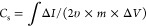 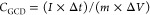
To demonstrate
the performance of the synthesized AC as an active material in composite
electrodes for supercapacitors, a two-electrode cell was built. Two
parallel graphite sheets were used as current collectors, and a glass-based
membrane with 1 mol L–1 H2SO4 was used as a separator. For the preparation of the electrodes,
0.002 g of AC, 450 μL of ultrapure water, 50 μL of isopropanol,
and 20 μL of Nafion were used. This solution was sonicated for
1 h, and an aliquot of 20 μL was deposited on each electrode.
This test was carried out at 2, 1, and 0.5 A g–1 of current density. The AC-10% electrode was placed and sealed under
mechanical pressure. Additionally, from eq 3 the capacitance (F g–1)
was determined: 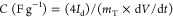
The morphological and physicochemical characterization of the synthesized materials was conducted in this study. In terms of performance, the activated carbons yielded between 30% and 35% (ratio of precursor material to final solid weight). With regard to chemical properties, EDS analysis revealed that all samples possessed significant amounts (9–25 wt %) of oxygenated functionalities (Table 1S).
Figure 1a displays a digital photograph of the purple corncob
powder used as the precursor and SEM images for the AC materials obtained
with increasing the concentration of KOH as the activating agent (AC
in Figure 1b, AC-5%
in Figure 1c, AC-10%
in Figure 1d, AC-15%
in Figure 1e, AC-20%
in Figure 1e, and AC-30%
in Figure 1f). For
the sample treated using distilled water in the absence of KOH solution,
the SEM micrograph reveals a smooth surface with nonsignificant porous
material formed on the surface. In contrast, in Figures 1c–1f, it is
seen that the activated samples display a gradual increase in porosity
as the concentration of the activating agent increases. The porous
are formed through the chemical reaction of the carbon components
of the biomass and KOH during the pyrolysis according to the following
reactions:44,45 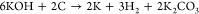 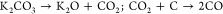 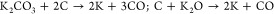
(a) Digital photograph of purple corncob powder used as the precursor of ACs. SEM images of ACs obtained at different concentrations of KOH as the activating agent: (b) 0%, (c) 5%, (d) 10%, (e) 20%, and (f) 30%.
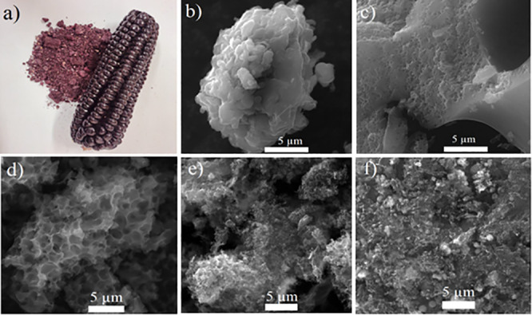
However, when the purple corncob powder was activated with KOH 30%, the porous structure collapses (Figure 1e), following a phenomenon known as burning by activation with KOH.46
To evaluate the influence of the activating agent on the surface area and the porous size distribution of the ACs, nitrogen adsorption isotherms were measured at 77 K and the Barrett–Joyner–Halenda (BJH) method was investigated.
As shown in Figures 2a–2c, the obtained curves correspond to type IV isotherms according to the IUPAC classification. It is observed in samples AC-5% and AC-10% a steep rise of N2 uptake at relative pressures (P/Po < 0.1) due to the presence of micropores,46 and at P/Po > 0.5 the hysteresis corresponding to the condensation is attributed to the presence of a mesoporous structure.3
Nitrogen adsorption–desorption isotherms of AC samples obtained at 700 °C using different concentrations of KOH as the activating agent: (a) AC-5%, (b) AC-10%, and (c) AC-20%. Surface specific area (SSA) is shown in black squares, micropore area is shown in blue squares, and micropore volume corresponds to red squares for all samples in (d).
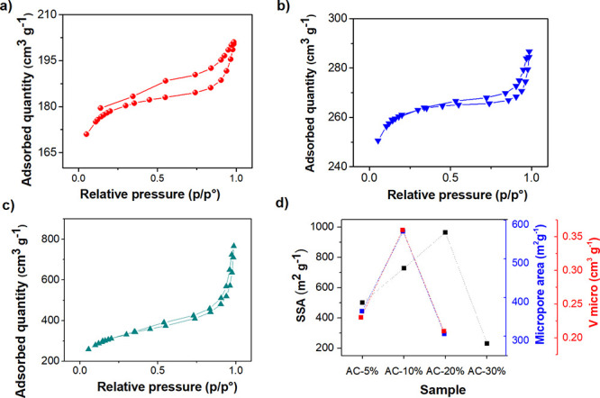
As summarized in Table 1 and shown in Figure 2d, the specific surface area (SSA) increases as the activating agent concentration increases, except for sample AC-30%, in which the porous structure collapses, as observed by SEM. The SSA of AC-20% is around 25% higher than that of AC-10% (965 vs 729 m2 g–1, respectively) and 42% superior with respect to AC-5% (965 vs ∼500 m2 g–1). However, the micropore area of samples of AC-10% and AC-5% correspond to 88% and 85% of the total SSA, while AC-20% is only 37%. Similarly, the micropore volume is 41% higher in the AC-10% sample (0.36 cm3 g–1 for AC-10% vs 0.21 cm3 g–1 for AC-20%).
| Sample | Specific surface area (m2 g–1) | Micropore area (m2 g–1) | Microporosity (%) | V micropore (cm3 g–1) | Pore width (nm) |
|---|---|---|---|---|---|
| AC-5% | 499.5 | 415.5 | 88 | 0.23 | 2.47 |
| AC-10% | 728.7 | 621.1 | 85 | 0.36 | 2.41 |
| AC-20% | 965.1 | 355.8 | 37 | 0.21 | 4.55 |
| AC-30% | 231.0 | -a | -a | -a | -a |
Below the error.
The FTIR and Raman spectra of all the purple-corncob-derived carbon samples obtained after the activation at different concentrations of KOH are shown in Figure 1S. The most significant bands in the FTIR spectrum are 955, 1043, 1600–1700, ∼2100, 2330, and 2390 cm–1. The vibrations at 955 cm–1 may be assigned to C–C skeletal vibration, while the band around 1150 cm–1 can be attributed to ether groups (νC–O).47 The absorption band at around 2115–2088 cm–1 can be attributed to the C–O ester and the C=C bond of the aromatic groups in the carbonaceous structure.48,49 The presence of (νC=O) in quinones (1735 and 1647 cm–1) and lactones (∼1720 cm–1)50 is uncertain due to the noisy spectra in the region from 1400 to 1800 cm–1.
On the other hand, the Raman spectra manifest two important features: the D and G bands characteristic of around 1360 and 1590 cm–1. The D band implies a disordered structure, which is attributed to vacancies, defects, and impurities (sp3 bond structure), while the G band indicates a hexagonal arrangement of graphite related to sp2 hybridized C atoms.51
As shown in Table 2S, AC-0% produced without KOH has an ID/IG ratio and nD (number of defects) of about 0.77 and 1.7 × 1011, respectively, which are slightly lower than those of the samples activated with different concentrations of KOH, in which R (ID/IG ratio) is between 0.94 and 1; in comparison, the crystallinity and the interdefect distance have values of 24.9 and 13.7, respectively.
The higher disorder in the activated samples may be a consequence of the different reactions that take place during the heating processes. Under these conditions it has been assumed that (i) KOH etches the carbonaceous structure; (ii) CO2 and H2O molecules are released from the carbonaceous structure, helping the porous formation; and (iii) the intercalation of the in situ formed metal K atoms into the carbon structure may lead to the lattice expansion.25
The XPS was utilized to assess the elemental chemical composition of ACs exposed to various concentrations of KOH. In Figure 2S, the survey chart displays the AC samples, emphasizing carbon and oxygen as the primary elemental components. Nonetheless, some samples exhibit traces of Si, potentially originating from the glass materials utilized. The survey spectrum data are available in Table 3S.
Figure 3 displays the deconvoluted C 1s spectra for AC and AC-10%, showcasing binding energy (BE) peaks of high intensity at 284.6 eV that correspond to the C–C bond. Between approximately 285 to 289 eV, diverse oxygenated functional groups (C–O, C=O, O–C=O) are also observable.52−55 The C 1s deconvolution for AC-5%, AC-20%, and AC-30% is shown in Figure 3S, indicating a rise in oxygenated functional groups when carbon is activated with KOH. Table 4S provides a summary of these findings.
XPS deconvoluted spectra for C 1s of the (a) AC-0% and (b) AC-10% samples.
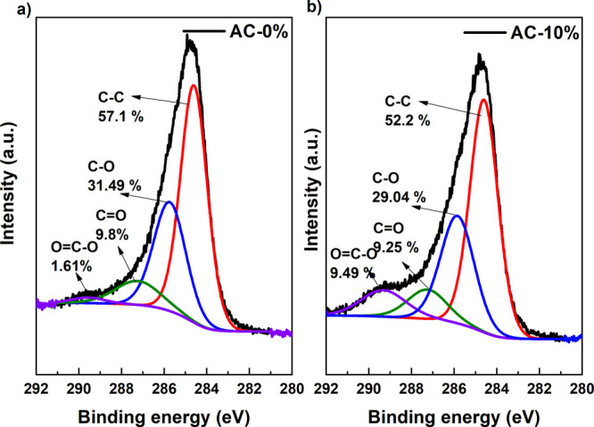
The electrochemical properties of the composites prepared by the ACs obtained from purple corncob were studied by cyclic voltammetry, galvanostatic charge/discharge, and electrochemical impedance spectroscopy. Figure 4a shows cyclic voltammograms in an aqueous 1 mol L–1 H2SO4 electrolyte solution at a scan rate of 5 mV s–1 in the range of 0–0.8 V, while the electrode response in 1 mol L–1 KOH (from −0.5 to 0.15 V) is shown in Figure 4b. The CV curves display an almost rectangular-like shape typical of capacitive or EDLC electrode materials. In addition, in acidic media can be observed a slight faradaic contribution around 0.3–0.4 V in both anodic and cathodic regions. These features are related to pseudocapacitance attributed to the activity of functional groups such as the quinone/hydroquinone couple in the presence of protons.56 Under an alkaline electrolyte (Figure 4b), the redox reaction of surface groups shifts to negative potentials, and only a small shoulder around −0.2 V in the cathodic region is observed.57 When employing sulfuric acid as an electrolyte, the storage mechanism for AC-5% and AC-10% exhibits a deviation in the plot of log I vs log E,58 with slope values less than 0.9. This deviation points to the presence of a pseudocapacitive component as part of the mechanism, indicating that it is not purely capacitive. In contrast, the slope values for AC-20% and AC-30% are close to 1, indicating a purely capacitive mechanism (see Figure 4S and Table 5S). The same behavior is observed under alkaline conditions, as shown in Figure 5S and Table 6S.
Cyclic voltammograms and galvanostatic charge/discharge curves for composite electrodes with purple corncob as the precursor of AC activated with different concentrations of KOH: 5% (red), 10% (blue), 20% (green), and 30% (magenta) in 1 mol L–1 H2SO4 solution (a and c) and 1 mol L–1 KOH as the electrolytes (b and d). CVs were measured at a scan rate of 5 mV s–1 and GCDs at 0.5 A g–1.
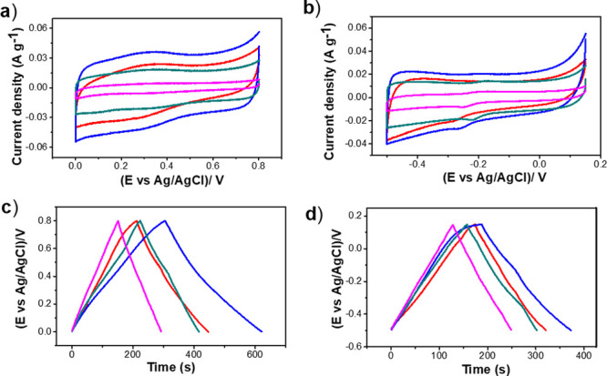
On the other hand, the materials’
potential needs validation
through assessing their volumetric capacitance (Cv). The Cv was determined
through the following formulas: 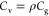 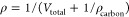
Here, Cv and ρ stand for the volumetric capacitance (measured in Farads per cubic centimeter) and mass density (in grams per cubic centimeter) of the active material. Vtotal denotes the overall pore volume of the porous carbon (in cubic centimeters per gram), and ρcarbon represents the actual density of carbon (2 g cm–3).59,60
The volumetric capacitance values are listed in Table 7S. In an acidic medium, the values range between 127 and 208 F cm–3 and between 103 and 129 F cm–3 in an alkaline medium, comparable to other types of activated carbons reported in the literature.61 These results indicate that using biomass to produce high-value carbon materials is a plausible alternative.
To further evaluate the electrochemical behavior of the samples in different electrolytes, the electrodes were charged/discharged at a constant current (galvanostatic) in acidic (Figure 4c) and alkali medium (Figure 4d). It is observed that both sets of GCD curves maintained quasi-triangular symmetries, indicating that the capacitance is mostly originated from the electric double-layer charge/discharge, giving rise to a pure capacitance behavior.62 However, a slight variation in the slope around 0.4 V (in 1 mol L–1 H2SO4) and −0.2 to −0.4 V (for the alkali electrolyte) confirms a minimal pseudocapacitive contribution, as was previously observed in CVs (Figures 4a and 4b). Figures 4c and 4d also exhibit small differences in the charging/discharging times, pointing to good efficiency during the charge/discharge cycle. In addition, a fast inspection of Figures 4c and 4d shows that the time required for electrode discharging with AC-10% in both electrolytes is longer than in other samples, demonstrating that the capacitance of the AC-10% material is the highest intensity (Table 7S).
EIS measurements were conducted to examine the kinetic information on ion/electron exchange between the electrode and electrolyte interfaces. Figure 5 shows the Nyquist diagram for the synthesized purple-corncob-biomass-activated carbon using H2SO4 and KOH as electrolytes (Figures 5a and 5b, respectively), and more details are gathered in Tables 7S and 8S.
Nyquist plots for composite electrodes with purple-corncob-based carbon activated with different concentrations of KOH: 5% (red), 10% (blue), 20% (green), and 30% (magenta) in 1 mol L–1 H2SO4 solution (a) and 1 mol L–1 KOH (b). Inset of the equivalent circuit obtained by impedance spectroscopy.
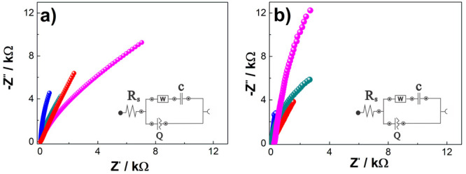
To investigate the ability to penetrate through porous material and evaluate their performance as supercapacitor electrodes the AC impedances at a frequency of 0.01–1000 Hz at the OCP are shown.57 At high frequency, the curve intercepts the horizontal axis of the Nyquist diagram; this point is attributed to the total equivalent series resistance (ESR) due to contributions from the resistance of the electrolytic solution, the intrinsic resistance of the active material, and the contact resistance at the current collector/active material interface.62−64 In an acidic medium, the ESR value for all ACs was less than 0.02 Ω; which would indicate that in this medium there is a shortening of the ion diffusion path. Conversely, in the basic medium (1 mol L–1 KOH), AC-5%, AC-10%, and AC-20% have values lower than 33 Ω, while the resistivity value increases to 200 Ω for AC-30% (see Tables 8S and 9S).
The phase angle at low frequencies for the AC-5%, AC-10%, AC-20%, and AC-30% samples were 69.5°, 84.6°, 76.9°, and 69.2°, respectively, in 1 mol L–1 KOH; while in 1 mol L–1 H2SO4 they have phase angles of 69.5°, 83°, 81°, and 80.5°, respectively. These data suggest that the electrode process is mainly controlled by the mixed kinetics of infinite semiadsorption and diffusion65 since the angles are between 45° and 90°. In addition, it is observed that the AC-10% sample in both media presents the best capacitive properties when used as an electrode for SCs.
A comparison of the specific capacitance of the synthesized samples using different concentrations of KOH is shown in Figure 6. It is observed that a similar trend in the electrochemical performance is obtained by means of CV, GDC, and EIS. In general, samples analyzed in acidic media (Figure 6a) show a better performance than those in an alkaline electrolyte (Figure 6b), except for AC-30%, where similar values are observed.
Specific capacitance of the different purple-corncob-based AC samples measured by different techniques: CV at 5 mVs–1 (black circles), GCD at 0.5 A g–1 (red circles), and EIS (blue circles) using (a) 1 mol L–1 H2SO4 and (b) 1 mol L–1 KOH as electrolyte solutions.
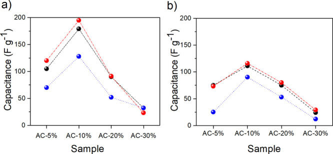
The composite electrodes with AC-10% deliver a capacitance of 179 F g–1 measured by CV in 1 mol L–1 H2SO4 as the electrolyte, while for AC-5%, AC-20%, and AC-30%, the obtained values are 105, 90, and 32 F g–1, respectively.
Similarly, the electrode with AC-10% measured by GCD in 1 mol L–1 H2SO4 presented a capacitance of 195 F g–1, approximately 39% and 53% superior to those obtained for AC-5% (120 F g–1) and AC-20% (91 F g–1), respectively.
These results are in good agreement with previous reports that the capacitances of samples in H2SO4 were the highest. This behavior was attributed to the presence of quinone groups on the surface that may bring pseudocapacitance into the system.39
Moreover, the trend observed in the specific capacities of all the samples matches well with the results obtained for the microporous area and microporous volume (Figure 2c), in which it is evidenced that AC-10% possesses both the higher microporous area and micropore volume. In addition, the high phase angle observed for the AC-10% sample also reveals an improved mass/charge transfer through the porous layer.
Finally, the observed behavior seems to indicate that a further increase in the activating agent concentration beyond 10% results in a loss of performance due to the collapse of the structure, poorer ion diffusion conditions, and the loss of an accessible area. This last sample was consequently selected for a stability test.
To further evaluate the electrochemical performance of the AC-10% sample, a two-electrode homemade cell was used. For this, two acrylic plates were located in parallel and a homogeneous pressure was applied to the electrodes by using four screws (Figure 7a), then the system was placed inside an acrylic container with electrolytic solution. Additional details of the cell setup are provided in the Experimental Section (see Section 2.4).
(a) Diagram of the two-electrode cell and its components used for galvanostatic charged/discharged GCD analysis of the sample of AC-10%. (b) GCD analysis of 50 000 cycles of sample of AC-10%. (c) Cyclic stability test at 1 A g–1 for 50 000 cycles: GCD at 1 A g–1 in 1.0 mol L–1 KOH.
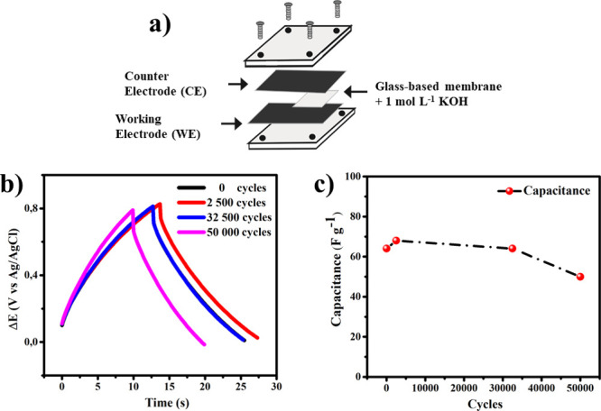
Consequently, the material was evaluated by using the galvanostatic charge/discharge technique over 50 000 charge/discharge cycles at a current density of 6 A g–1 and the lectures were registered at 1.0 A g–1. In Figure 7b, an increase in capacitance (F g–1) of 6.25% is observed with respect to the first cycle. The main reason is the access to mesopores of the material during the first cycles of the experiment. Beyond 30 000 cycles, the secondary reactions begin to deplete charge, resulting in a loss of energy storage for the entire device. This effect does not reduce the efficiency between the charge and discharge time, which remains between 0.98 and 0.99.
The capacity of the device gradually increases from the previously reported value of 64 F g–1 to 68 F g–1, probably due to the progressive wetting of the porous electrode. Furthermore, in a more in-depth study it is observed that after 30 000 cycles there is a decrease in capacitance; however, up to 50 000 cycles, an efficiency of 76% is reported (Figure 7c), possibly attributed to the blockage of the micropores in the electrode.66 Although the causes of such behavior exceed the scope of this work, AC obtained from purple corncobs can be shown to be a promising material for use as an electrode in supercapacitors.
Finally, the performance of the developed material was compared with different previous studies (Table 2), showing that activated carbon from purple corncob (Zea maysL.) exhibits similar results, highlighting that our study was conducted using 50 000 cycles.
| Material | Specific surface area (m2 g–1) | Electrolyte | Capacitance (F g–1) | Stability in % retention (number of cycles) | Reference |
|---|---|---|---|---|---|
| Biochar from exfoliated corncob | 543.7 | 0.5 mol L–1 H2SO4 | 221, 1 A g–1 | 78% (5000), 40 A g–1 | (67) |
| N and O codoped porous activated carbon (MWAC) based on a corncob | 254 | 6 mol L–1 KOH | 560, 0.5 A g–1 | 96.8% (10 000), 1.0 A g–1 | (53) |
| Activated carbon from African maize cobs | 1471 | 6 mol L–1 KOH | 456, 0.25 A g–1 | 80%, after 100 h, 0.25 A, 1.0 V | (54) |
| Corncob derived carbon materials | 1471 | 6 mol L–1 KOH | 293, 1.0 A g–1 | 99.9% (4000), 2.0 A g–1 | (68) |
| Porous carbon from a biowaste, sweet corn | 1370 | 6 mol L–1 KOH | 127, 1.0 A g–1 | 90% (5000), 2.0 A g–1 | (69) |
| Hierarchical porous activated carbon (AC) obtained from corn stalk pith | 2495 | 6 mol L–1 KOH | 323, 0.1 A g–1 | 97.9% (1000), 1.0 A g–1 | (70) |
| Activated carbon from the corn husk | 1115 | 0.5 mol L–1 H2SO4 | 269, 5 mV s–1 | 99.5% (20 000), 0.5 A g–1 | (71) |
| Activated carbon from purple corncob (Zea maysL.) | 728 | 1.0 mol L–1 KOH | 116, 0.5 A g–1 | 76% (50 000), 1.0 A g–1 | this work |
In this research, purple corncob was effectively used as a green precursor of activated carbon synthesized using four different concentrations of KOH as the activating agent followed by pyrolysis at 700 °C under N2 flow and applied as a composite electrode for supercapacitors.
The results showed here evidenced that a concentration of KOH of 10% (sample AC-10%) may increase capacitance around 42–50% with respect to samples activated with KOH 5% and 20%, reaching values as high as 179 F g–1 measured by CV at a scan rate of 5 mV s–1 using 1 mol L–1 H2SO4 as the electrolyte solution. Similarly, it was found that the specific capacitance of the electrode was higher in 1 mol L–1 H2SO4 (range 150–200 F g–1) than in the basic electrolyte (between 60 and 125 F g–1). This interesting performance was attributed to the high microporous surface area, which is 34% and 43% higher than that AC-5% and AC-20%, respectively, as well as the appropriate carbonaceous texture that allows the proper ion diffusion into the material.
The best behavior of this sample was also confirmed by GCD and EIS electrochemical techniques using a two-electrode cell. The stability analysis showed that the tested device composed of AC-10% electrodes had a capacitance of up to 50 F g–1 and a maximum increase in charge time after 2500 cycles of approximately 35%. These results make these CAs interesting materials for use as electrodes for supercapacitors.
GuoY.; RockstrawD. A.
Dujearic-StephaneK.; GuptaM.; KumarA.; SharmaV.; PanditS.; BocchettaP.; KumarY.
AiJ.; YangS.; SunY.; LiuM.; ZhangL.; ZhaoD.; WangJ.; YangC.; WangX.; CaoB.
PriyaD. S.; KennedyL. J.; AnandG. T.
SawangphrukM.; SuksomboonM.; KongsupornsakK.; KhuntiloJ.; SrimukP.; SanguansakY.; KlunbudP.; SukthaP.; ChiochanP.
HouJ.; CaoC.; MaX.; IdreesF.; XuB.; HaoX.; LinW.
LiK.; YinC.; DaiX.; ZhangJ.; YiS.; RaoJ.; ZhangY.
LiK.; XiaoY.; ZhengT.; SunQ.; ZhangY.; TengH.; WangW.; YaoK.; RaoJ.; ZhangY.
LiK.; GuoZ.; SunQ.; DaiX.; LiY.; YaoK.; LiuX.; BaoZ.; RaoJ.; ZhangY.
LiK.; TengH.; SunQ.; LiY.; WuX.; DaiX.; WangY.; WangS.; ZhangY.; YaoK.; BaoZ.; RaoJ.; ZhangY.
WangY.; WangX.; DaiX.; LiK.; BaoZ.; LiH.; TianH.; YangP.-a.; ZhouH.; ChenH.; YuY.; YanP.; ZhangY.
StahelW. R.
KurataniK.; OkunoK.; IwakiT.; KatoM.; TakeichiN.; MiyukiT.; AwazuT.; MajimaM.; SakaiT.
MiJ.; WangX.-R.; FanR.-J.; QuW.-H.; LiW.-C.
ZhangZ.; LiuN.; LiX.; WangY.; XiongY.; MengR.; LiuL.; HeS.
IsmantoA. E.; WangS.; SoetaredjoF. E.; IsmadjiS.
BhattacharjyaD.; YuJ. S.
KöseoğluE.; Akmil-BaşarC.
QuW. H.; XuY. Y.; LuA. H.; ZhangX. Q.; LiW. C.
GengZ.; ZhangC.; WangD.; ZhouX.; CaiM.
LiuY.; XuX.; QuB.; LiuX.; YiW.; ZhangH.
MahmoudM. E.; El-BahyS. M.; ElweshahyS. M. T.
HouX.-X.; DengQ.-F.; RenT.-Z.; YuanZ.-Y.
DingL.; ZouB.; LiuH.; LiY.; WangZ.; SuY.; GuoY.; WangX.
ZhangY.; ZhaoY. P.; QiuL. Le; XiaoJ.; WuF. P.; CaoJ. P.; BaiY. H.; LiuF. J.
LaoF.; SigurdsonG. T.; GiustiM. M.
Purple corn: the most potent antioxidant is from Peru. https://peru.info/en-us/gastronomy/news/2/12/purple-corn--the-most-potent-antioxidant (accessed 2023-11-10).
MazewskiC.; LiangK.; Gonzalez de MejiaE.
GullónP.; EibesG.; LorenzoJ. M.; Pérez-RodríguezN.; Lú-ChauT. A.; GullónB.
TennantD. R.; KlingenbergA.
Luna-VitalD.; LiQ.; WestL.; WestM.; Gonzalez de MejiaE.
ChenC.; SomavatP.; SinghV.; Gonzalez de MejiaE.
SomavatP.; KumarD.; SinghV.
JingP.; NoriegaV.; SchwartzS. J.; GiustiM. M.
EhsaniA.; ParsimehrH.
DubeyP.; ShrivastavV.; MaheshwariP. H.; SundriyalS.
Shivam; LaySrinivas; WangC.-T.; Chyi-How
González-GarcíaP.
ConderJ.; FicK.; GhimbeuC. M.
MajumdarD.
OginniO.; SinghK.; OportoG.; Dawson-andohB.; McdonaldL.; SabolskyE.
Usha RaniM.; NanajiK.; RaoT. N.; DeshpandeA. S.
BalathanigaimaniM. S.; ShimW. G.; LeeM. J.; KimC.; LeeJ. W.; MoonH.
YangK.; GaoQ.; TanY.; TianW.; QianW.; ZhuL.; YangC.
JungJ.-Y.; LeeY.-S.
SuX.; JiangS.; ZhengX.; GuanX.; LiuP.; PengZ.
NabaisJ. M. V.; NunesP.; CarrottP. J. M.; Ribeiro CarrottM. M. L.; GarcíaA. M.; Díaz-DíezM. A.
PeñaK. J.; GiraldoL.; MorenoJ. C.
FuertesA. B.; ArbestainM. C.; SevillaM.; MacIá-AgullóJ. A.; FiolS.; LópezR.; SmernikR. J.; AitkenheadW. P.; ArceF.; MacIasF.
MonjeI. E.; Sanchez-RamirezN.; SantagneliS. H.; CamargoP. H.; BélangerD.; SchougaardS. B.; TorresiR. M.
RuizV.; SantamaríaR.; GrandaM.; BlancoC.
ElmouwahidiA.; Bailón-GarcíaE.; Pérez-CadenasA. F.; Maldonado-HódarF. J.; Carrasco-MarínF.
WangF.; ZhengF.; JiangJ.; LiY.; LuoY.; ChenK.; DuJ.; HuangY.; LiQ.; WangH.
KigoziM.; KaliR.; BelloA.; PadyaB.; Kalu-UkaG. M.; WasswaJ.; JainP. K.; OnwualuP. A.; DzadeN. Y.
ZhangL.; TuL. Y.; LiangY.; ChenQ.; LiZ. S.; LiC. H.; WangZ. H.; LiW.
LotaG.; KrawczykP.; LotaK.; SierczyńskaA.; KolanowskiŁ.; BaraniakM.; BuchwaldT.
MaH.; ChenZ.; GaoX.; LiuW.; ZhuH.
Quispe-GarridoL. V.; MonjeI. E.; LópezE. O.; GonçalvesJ. M.; MartinsC. S.; PlanesG. Á.; Ruiz-MontoyaJ. G.; Baena-MoncadaA. M.
YanJ.; WangQ.; LinC.; WeiT.; FanZ.
ItoiH.; NishiharaH.; KogureT.; KyotaniT.
SuárezL.; CentenoT. A.
HuS.-C.; ChengJ.; WangW.-P.; SunG.-T.; HuL.-L.; ZhuM.-Q.; HuangX.-H.
ChenT.; PanL.; LiuX.; SunZ.
SivachidambaramM.; VijayaJ. J.; KennedyL. J.; JothiramalingamR.; Al-LohedanH. A.; MunusamyM. A.; ElanthamilanE.; MerlinJ. P.
ZengL.; LouX.; ZhangJ.; WuC.; LiuJ.; JiaC.
BoukhalfaS.; GordonD.; HeL.; MelnichenkoY. B.; NittaN.; MagasinskiA.; YushinG.
GenoveseM.; JiangJ.; LianK.; HolmN.
YangS.; ZhangK.
Usha RaniM.; NanajiK.; RaoT. N.; DeshpandeA. S.
CaoY.; WangK.; WangX.; GuZ.; FanQ.; GibbonsW.; HoefelmeyerJ. D.; KharelP. R.; ShresthaM.
Lobato-PeraltaD. R.; Duque-BritoE.; OrugbaH. O.; AriasD. M.; Cuentas-GallegosA. K.; OkolieJ. A.; OkoyeP. U.